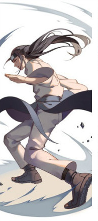
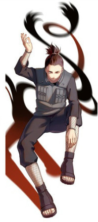
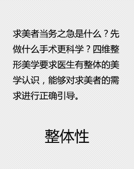
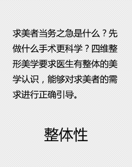

- 

- 
汉皇重色思倾国，
御宇多年求不得。
杨家有女初长成，
养在深闺人未识。
汉皇重色思倾国，
御宇多年求不得。
杨家有女初长成，
养在深闺人未识。
text-decoration: underline;下划线
text-decoration: overline;上划线
text-decoration:line-through:删除线样式-贯穿线样式
text-decoration-style: solid;
text-decoration-style: double;
text-decoration-style: dotted;
text-decoration-style: dashed;
text-decoration-style: wavy;
 
left block
rihgt block1
rihgt block2